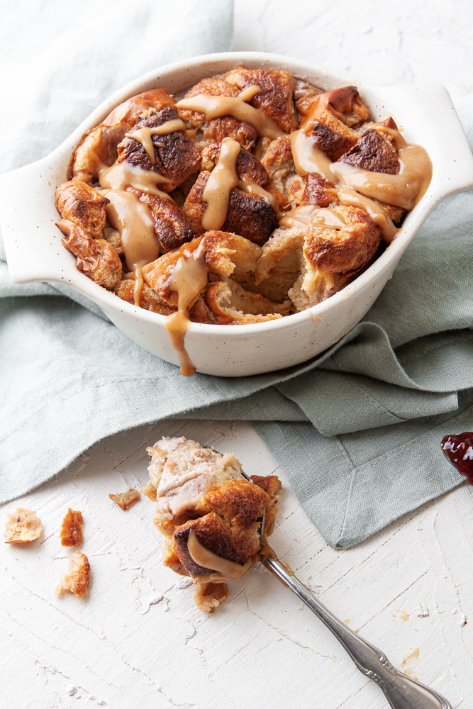

Home
Peanut Butter and Jelly Bread Pudding

Description
Peanut Butter and Jelly Bread Pudding is a comforting dessert made with soft bread, creamy peanut butter, and swett jelly. It is a simple way to turn everyday ingredients into a warm and satisfying dessert.
Ingredients
- Bread
- Peanut Butter
- Jelly
- Milk
- Eggs
- Sugar
- Vanilla extract
Steps
- Preheat the over
- Spread peanut butter and jelly onto the bread
- Cut the bread into pieces and place them in a baking dish
- Whisk together the eggs, milk, sugar, and vanilla
- Pour the mixture over the bread and let it soak
- Bake until the pudding is golden and set
- Let it cool slightly and serve